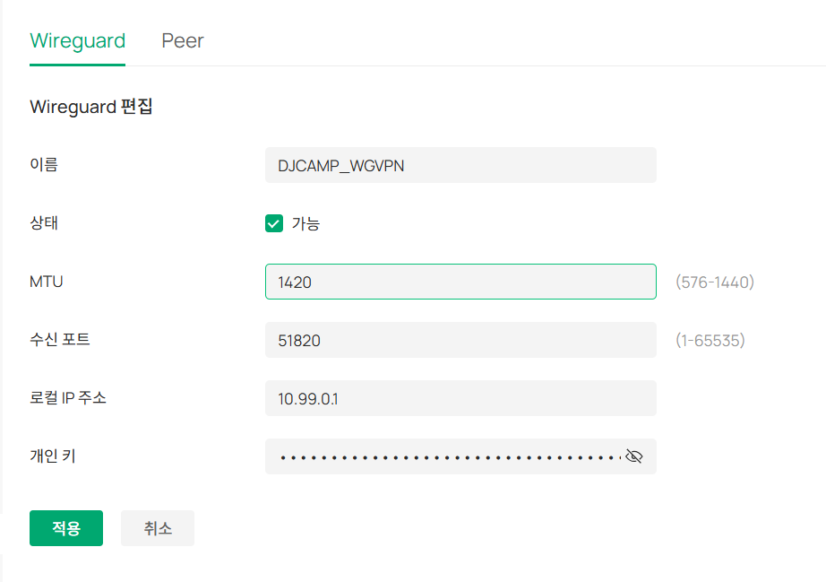
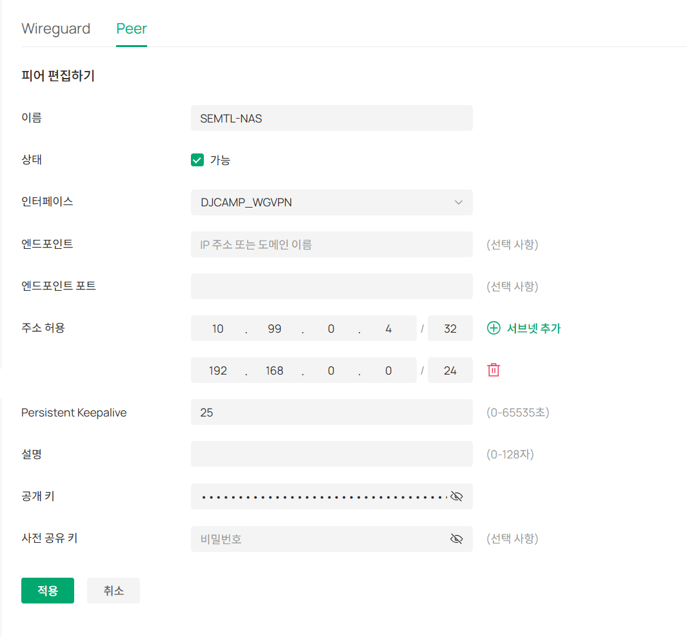
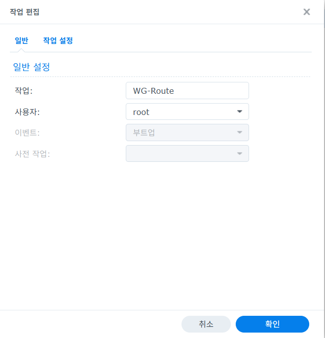
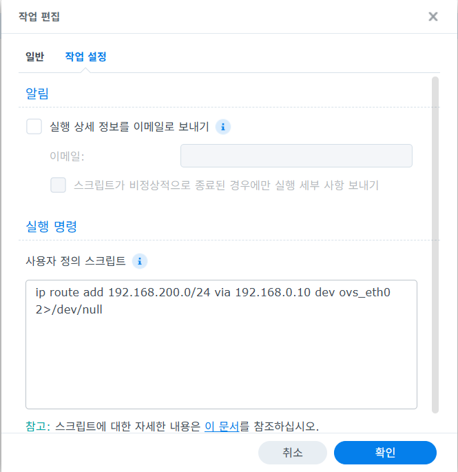
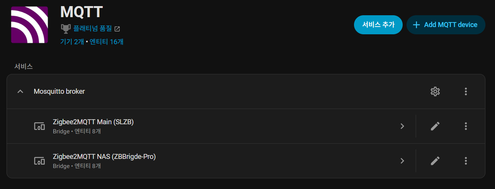

Synology Alpine VM WireGuard Zigbee2MQTT HA Integration
개요
이 문서는 Synology NAS에서 Alpine Linux VM을 만들고, 해당 VM에
WireGuard를 구성한 뒤, Synology NAS의 스케줄러와 Docker 기반
zigbee2mqtt를 이용해 원격 Zigbee Bridge를 Home Assistant까지 연동하는
절차를 정리합니다.
이 문서에서 다루는 최종 구조는 아래와 같습니다.
Home Assistant
-> MQTT Broker
-> zigbee2mqtt 컨테이너 (Synology NAS)
-> NAS 라우팅
-> Alpine VM (WireGuard Client)
-> WireGuard Tunnel
-> Omada 측 WireGuard Server / 원격 LAN
-> Zigbee Bridge (tcp://192.168.200.192:8888)
아키텍처와 예시 값
- Synology NAS IP:
192.168.0.2 - Alpine WireGuard VM IP:
192.168.0.10 - MQTT Broker IP:
192.168.0.21 - Home Assistant IP:
192.168.0.21 - Omada 공인 진입 주소 예시:
djcamp.ddnsfree.com:51820/udp - WireGuard 터널 대역 예시:
10.99.0.0/24 - Alpine VM 터널 IP 예시:
10.99.0.4/24 - 원격 Zigbee 대역:
192.168.200.0/24 - 원격 Zigbee Bridge:
192.168.200.192:8888 - Zigbee2MQTT UI 포트:
8099/tcp
운영 원칙:
WireGuard는 NAS 컨테이너가 아니라 별도 Alpine VM에서 종료- NAS는 필요한 원격 사설 대역을 Alpine VM으로 보냄
zigbee2mqtt컨테이너는 일반bridge네트워크로 유지Home Assistant는 MQTT Discovery로 연동
사전 조건
- Synology DSM 관리자 권한
- Synology
Virtual Machine Manager사용 가능 상태 - Synology
Container Manager또는 Docker CLI 사용 가능 상태 - Omada 측
WireGuard Server또는 이에 준하는 원격 WireGuard 서버 정보 확보 - 원격 Zigbee Bridge가
tcp://192.168.200.192:8888로 접근 가능한 상태 - MQTT Broker 준비 완료
Home Assistant의 MQTT 통합 추가 가능 상태
필수 준비 정보:
- WireGuard 서버 공개키
- WireGuard 서버 접속 주소 또는 DDNS
- WireGuard 서버 포트
- 클라이언트에 할당할 터널 IP
- 서버 측 허용 라우트(
AllowedIPs) 정책
1. Synology NAS에서 Alpine VM 생성
1-1. Alpine ISO 준비
alpinelinux.org에서Alpine VirtualISO를 다운로드- Synology
Virtual Machine Manager에 ISO 업로드
권장:
- 초경량 용도면
Alpine VirtualISO 우선 - 장기 운영 시 문서 작성 시점의 최신 안정 버전 사용
1-2. Synology VMM에서 VM 생성
Virtual Machine Manager에서 Linux VM을 새로 생성합니다.
권장 사양:
- vCPU:
1 - Memory:
512MB - Disk:
10GB이상 - Network: NAS와 같은 LAN 연결
- 부팅 ISO: Alpine ISO
예시 운영값:
- VM 이름:
vm-wg - 고정 IP:
192.168.0.10 - Gateway:
192.168.0.1 - DNS:
192.168.0.2
1-3. Alpine 기본 설치
VM을 부팅한 뒤 콘솔에서 설치를 진행합니다.
setup-alpine
설치 중 권장값:
- keyboard:
us - hostname:
vm-wg - interface: 실제 NIC 선택(
eth0또는ens18) - IP:
static - address:
192.168.0.10/24 - gateway:
192.168.0.1 - DNS:
192.168.0.2 - timezone:
Asia/Seoul - disk mode:
sys
설치 후 재부팅:
reboot
1-4. Alpine 설치 직후 확인
ip -br addr
ip route
cat /etc/resolv.conf
ping -c 3 192.168.0.1
ping -c 3 192.168.0.2
정상 기준:
- 관리 IP가
192.168.0.10/24 - 기본 게이트웨이가
192.168.0.1 - DNS가
192.168.0.2
1-5. VM 기본 운영값 정리
## 1이 끝나면 아래 기준으로 VM 초기 상태를 맞춥니다.
VM-WG [SEMTL-NAS] 기준:
- CPU 코어:
1 - 메모리:
512MB - MAC 주소:
02:11:32:29:7D:6D - 컴퓨터 이름:
vm-wg - 계정:
root,semtl
운영 메모:
- Alpine 설치 직후
semtl계정이 없다면 먼저 생성합니다.
예시:
adduser semtl
passwd root
passwd semtl
1-6. qemu-guest-agent 설치
Synology VMM에서도 게스트 상태 확인을 쉽게 하려면 qemu-guest-agent를 설치합니다.
apk add qemu-guest-agent
rc-service qemu-guest-agent start
rc-update add qemu-guest-agent
rc-service qemu-guest-agent status
확인 기준:
qemu-guest-agent서비스가started- Synology VMM에서 게스트 상태 조회가 정상
1-7. /etc/hosts, /etc/resolv.conf 보정
/etc/hosts 예시:
127.0.0.1 localhost.localdomain localhost
192.168.0.10 wg.internal.semtl.synology.me vm-wg
::1 ip6-localhost ip6-loopback
fe00::0 ip6-localnet
ff00::0 ip6-mcastprefix
ff02::1 ip6-allnodes
ff02::2 ip6-allrouters
ff02::3 ip6-allhosts
/etc/resolv.conf 예시:
search internal.semtl.synology.me
nameserver 192.168.0.2
nameserver 1.1.1.1
적용 후 확인:
hostname
hostname -f
cat /etc/hosts
cat /etc/resolv.conf
ping -c 3 192.168.0.2
정상 기준:
hostname결과가vm-wghostname -f결과가wg.internal.semtl.synology.me- DNS 조회와 기본 통신이 정상
1-8. 스냅샷 전 정리
초기 구성과 게스트 에이전트, hostname/DNS 보정까지 끝나면 스냅샷 전에 불필요 파일을 정리합니다.
cat << 'EOF' > cleanup.sh
#!/bin/sh
echo "[1] APK cache 정리"
apk cache clean
rm -rf /var/cache/apk/*
echo "[2] 로그 정리"
find /var/log -type f -exec truncate -s 0 {} \;
echo "[3] tmp 정리"
/bin/rm -rf /tmp/*
/bin/rm -rf /var/tmp/*
echo "[4] 사용자 히스토리 삭제"
truncate -s 0 /home/semtl/.ash_history 2>/dev/null
truncate -s 0 /home/semtl/.bash_history 2>/dev/null
truncate -s 0 /root/.ash_history 2>/dev/null
truncate -s 0 /root/.bash_history 2>/dev/null
echo "[5] 현재 세션 히스토리 제거"
unset HISTFILE
history -c 2>/dev/null
echo "[6] orphan 소켓 정리 (선택)"
find /tmp -type s -delete 2>/dev/null
echo "[7] sync"
sync
echo "[✔ 완료] 스냅샷 준비 완료"
EOF
chmod +x cleanup.sh
sudo ./cleanup.sh
1-9. Synology VMM 스냅샷 생성
위 정리가 끝나면 Synology VMM에서 기준 스냅샷을 생성합니다.
권장 시점:
- Alpine 설치 완료 후
qemu-guest-agent설치 완료 후semtl계정 생성 완료 후/etc/hosts,/etc/resolv.conf보정 완료 후- WireGuard 설치 전 기준점을 남기고 싶을 때
스냅샷 :
#1. VM-WG [SEMTL-NAS]
- CPU 코어 : 1
- 메모리 : 512MB
- MAC 주소 : 02:11:32:29:7D:6D
- 컴퓨터이름 : vm-wg
- ID : root / semtl
- PW : 127001 / 127001
- QEMU 게스트 에이전트 설치
- /etc/hosts, /etc/resolv.conf 수정
- 스냅샷전 정리
2. Alpine VM에 WireGuard 설정
2-1. 패키지 설치
apk update
apk add wireguard-tools iptables iproute2
커널 모듈 확인:
modprobe wireguard
2-2. WireGuard 키 생성
mkdir -p /etc/wireguard
chmod 700 /etc/wireguard
wg genkey | tee /etc/wireguard/privatekey | wg pubkey > /etc/wireguard/publickey
chmod 600 /etc/wireguard/privatekey
chmod 644 /etc/wireguard/publickey
공개키 확인:
cat /etc/wireguard/publickey
2-3. wg0.conf 작성
/etc/wireguard/wg0.conf 예시:
[Interface]
PrivateKey = <ALPINE_VM_PRIVATE_KEY>
Address = 10.99.0.4/24
MTU = 1420
PostUp = iptables -t nat -A POSTROUTING -o wg0 -j MASQUERADE; iptables -A FORWARD -i eth0 -o wg0 -j ACCEPT; iptables -A FORWARD -i wg0 -o eth0 -j ACCEPT; iptables -A FORWARD -p tcp --tcp-flags SYN,RST SYN -j TCPMSS --clamp-mss-to-pmtu
PostDown = iptables -t nat -D POSTROUTING -o wg0 -j MASQUERADE; iptables -D FORWARD -i eth0 -o wg0 -j ACCEPT; iptables -D FORWARD -i wg0 -o eth0 -j ACCEPT; iptables -D FORWARD -p tcp --tcp-flags SYN,RST SYN -j TCPMSS --clamp-mss-to-pmtu
[Peer]
PublicKey = <OMADA_OR_REMOTE_SERVER_PUBLIC_KEY>
Endpoint = djcamp.ddnsfree.com:51820
# AllowedIPs = 10.99.0.0/24, 192.168.200.0/24
AllowedIPs = 10.99.0.0/24, 192.168.1.0/24, 192.168.10.0/24, 192.168.100.0/24, 192.168.110.0/24, 192.168.20.0/24, 192.168.200.0/24, 192.168.210.0/24
PersistentKeepalive = 25
운영 메모:
- 실제
PrivateKey와 실운영PublicKey는 문서에 커밋하지 않고 로컬 파일에만 보관합니다. AllowedIPs는 Alpine VM이 WireGuard 피어 쪽으로 보낼 목적지 대역을 의미합니다.- 기존 예시
# AllowedIPs = 10.99.0.0/24, 192.168.200.0/24는 IoT 대역만 터널로 보내는 최소 구성 예시입니다. - 이 예시에서는 WireGuard 터널 대역
10.99.0.0/24와 여러 원격 LAN 대역192.168.1.0/24,192.168.10.0/24,192.168.20.0/24,192.168.100.0/24,192.168.110.0/24,192.168.200.0/24,192.168.210.0/24를 터널로 보냅니다. - 즉, IoT 대역 이외의 다른 원격 대역도 WireGuard를 통해 통과시키기 위해
AllowedIPs를 여러 대역으로 확장한 예시입니다. - 이 문서에서는 NAS와 Alpine VM의 일반 인터넷 트래픽까지 터널로 보내지 않고, 필요한 원격 사설 대역만 터널로 보내는 split tunnel 구성을 전제로 합니다.
- 따라서
AllowedIPs = 0.0.0.0/0는 이 문서 목적에 맞지 않습니다. - NIC 이름이
eth0가 아니라ens18등으로 보이면PostUp,PostDown도 함께 변경합니다.
파일 권한 적용:
chmod 600 /etc/wireguard/wg0.conf
2-4. IP Forward 활성화
nano /etc/sysctl.conf
파일 제일 아래에 아래 내용을 추가합니다.
# WireGuard Gateway Settings
# 라우터 기능 활성화 (필수)
net.ipv4.ip_forward=1
# VPN 환경에서 비대칭 라우팅 허용
net.ipv4.conf.all.rp_filter=0
net.ipv4.conf.default.rp_filter=0
sysctl -p
sysctl net.ipv4.ip_forward
sysctl net.ipv4.conf.all.rp_filter
sysctl net.ipv4.conf.default.rp_filter
정상 기준:
net.ipv4.ip_forward = 1net.ipv4.conf.all.rp_filter = 0net.ipv4.conf.default.rp_filter = 0
2-5. WireGuard 기동과 자동 시작
wg-quick up wg0
wg show
구분:
/etc/sysctl.conf는ip_forward,rp_filter같은 커널 네트워크 옵션을 부팅 후에도 유지하는 설정입니다.- OpenRC 자동 시작은
wg-quick.wg0서비스로 등록합니다. - 즉,
sysctl.conf를 수정했다고 해서WireGuard가 자동 기동되지는 않습니다.
OpenRC 자동 시작 등록:
apk add wireguard-tools-openrc
ln -s /etc/init.d/wg-quick /etc/init.d/wg-quick.wg0
rc-service wg-quick.wg0 start
rc-update add wg-quick.wg0 default
필요 시 부팅 후 상태 확인:
rc-service wg-quick.wg0 status
sudo wg show
ip route
3. Omada에서 WireGuard 서버 설정
이 단계는 Omada Gateway에서 WireGuard 서버를 직접 운영하는 경우에 적용합니다.
3-1. Omada WireGuard Server 생성
Omada Wireguard 편집 화면 기준으로 서버 인터페이스는 아래처럼 설정합니다.

캡션: Omada WireGuard 서버 인터페이스 DJCAMP_WGVPN, MTU 1420, 수신 포트 51820, 로컬 IP 10.99.0.1
- 이름:
DJCAMP_WGVPN - 상태:
가능 - MTU:
1420 - 수신 포트:
51820 - 로컬 IP 주소:
10.99.0.1 - 개인 키: Omada가 생성한 WireGuard 서버 개인 키 사용
운영 메모:
- 이 화면의
로컬 IP 주소 10.99.0.1은 WireGuard 서버 인터페이스 주소입니다. - Alpine VM은 같은 터널 대역의
10.99.0.4/24를 사용합니다. - 이후
Peer탭에서SEMTL-NAS피어를 추가하고 Alpine VM 공개키를 등록합니다.
3-2. Omada Peer 편집 화면 기준 설정
Omada Peer 화면 기준으로 SEMTL-NAS 피어는 아래처럼 입력합니다.

캡션: SEMTL-NAS 피어 예시, 인터페이스 DJCAMP_WGVPN, 주소 허용 10.99.0.4/32, 192.168.0.0/24
- 이름:
SEMTL-NAS - 상태:
가능 - 인터페이스:
DJCAMP_WGVPN - 엔드포인트: 비워둠
- 엔드포인트 포트: 비워둠
- 주소 허용 1:
10.99.0.4/32 - 주소 허용 2:
192.168.0.0/24(선택) - Persistent Keepalive:
25 - 설명: 선택 사항
- 공개 키: Alpine VM의
publickey - 사전 공유 키: 비워둠
운영 메모:
- 기본값은
주소 허용 1: 10.99.0.4/32만으로도 됩니다. - 이 문서처럼 Synology NAS가 Alpine VM을 거쳐 원격 Zigbee 대역으로만 나가고,
원격 측에서 NAS 대역
192.168.0.0/24로 역방향 접근할 필요가 없다면주소 허용 2: 192.168.0.0/24는 없어도 됩니다. - 반대로 원격 WireGuard 서버가
192.168.0.0/24를 Alpine VM 뒤 클라이언트 대역으로 알아야 하거나, 원격 측에서 NAS LAN으로 되돌아오는 트래픽을 라우팅해야 한다면주소 허용 2: 192.168.0.0/24를 함께 넣습니다. - 엔드포인트와 엔드포인트 포트는 일반적인 클라이언트 피어 구성에서는 비워둬도 됩니다.
- 공개 키는 Alpine VM에서
cat /etc/wireguard/publickey결과를 사용합니다.
3-3. Omada 측 Peer 허용 대역 확인
Omada 또는 원격 WireGuard 서버에는 아래 항목이 반영되어야 합니다.
- Alpine VM 터널 IP:
10.99.0.4/32 - NAS가 있는 로컬 LAN:
192.168.0.0/24(필요한 경우만)
상황에 따라 서버 측에서 아래 둘 중 하나가 필요합니다.
- 라우팅 방식:
192.168.0.0/24대역을 Alpine VM 뒤 클라이언트로 인지 - NAT 방식: Alpine VM에서 MASQUERADE된 트래픽만 허용
판단 기준:
- 원격 Zigbee 대역으로 나가는 통신만 필요하면
192.168.0.0/24광고는 보통 불필요 - 원격 측에서 NAS LAN으로 역방향 접근하거나 응답 경로를 명시적으로 보장해야 하면
192.168.0.0/24광고 필요
3-4. Omada 방화벽/정책 확인
51820/udp인바운드 허용- 원격 Zigbee Bridge 포트
8888/tcp접근 허용 - WireGuard 인터페이스에서 원격 LAN으로의 포워딩 허용
검증 기준:
- Alpine VM에서
wg show시 handshake 갱신 - Alpine VM에서
ping 192.168.200.192또는nc -vz 192.168.200.192 8888성공
4. Synology NAS에 라우팅 설정
4-1. DSM 작업 스케줄러로 라우트 적용
실제 운영에서는 DSM Static Route가 기대대로 동작하지 않아 작업 스케줄러로
라우트를 적용했습니다.
경로:
- DSM
Control Panel Task Scheduler생성트리거된 작업사용자 정의 스크립트
일반 설정 화면 예시:

캡션: 작업명 WG-Route, 사용자 root, 이벤트 부트업
권장값:
- 작업:
WG-Route - 사용자:
root - 이벤트:
부트업
작업 설정 화면 예시:

캡션: 사용자 정의 스크립트에 원격 Zigbee 대역 라우트 추가
스크립트 예시:
ip route add 192.168.200.0/24 via 192.168.0.10 dev ovs_eth0 2>/dev/null
운영 메모:
- 이 문서 기준 권장 방식은
작업 스케줄러입니다. - 재부팅 후에도
192.168.200.0/24경로를 일관되게 복구할 수 있습니다. - Synology 네트워크 인터페이스명이
ovs_eth0가 아닐 수 있으므로 환경에 맞게 조정합니다.
4-2. Synology NAS에서 경로 확인
ip route
ping 192.168.200.192
정상 기준:
192.168.200.0/24 via 192.168.0.10경로 확인- NAS에서 원격 Zigbee Bridge에 도달 가능
5. Synology NAS에 Zigbee2MQTT 설치
5-1. 작업 디렉터리 생성
mkdir -p /volume1/docker/zigbee2mqtt-zbbridge-pro/data
권장 파일 구조:
/volume1/docker/zigbee2mqtt-zbbridge-pro/
├── docker-compose.yml
└── data/
└── configuration.yaml
5-2. docker-compose.yml 작성
services:
zigbee2mqtt-zbbridge-pro:
image: ghcr.io/koenkk/zigbee2mqtt:latest
container_name: zigbee2mqtt-zbbridge-pro
restart: unless-stopped
environment:
- TZ=Asia/Seoul
- Z2M_WATCHDOG=default
volumes:
- /volume1/docker/zigbee2mqtt-zbbridge-pro/data:/app/data
ports:
- "8099:8099"
networks:
- zigbee2mqtt
networks:
zigbee2mqtt:
name: zigbee2mqtt
driver: bridge
주의:
- NAS 라우팅만으로 원격 Zigbee 대역을 Alpine VM으로 보낼 수 있어야 합니다.
5-3. configuration.yaml 작성
version: 5
homeassistant:
enabled: true
mqtt:
server: mqtt://192.168.0.21:1883
user: zigbee2mqtt
password: mypassword123
base_topic: zigbee2mqtt_zbbridge_pro
serial:
port: tcp://192.168.200.192:8888
baudrate: 115200
adapter: zstack
frontend:
enabled: true
port: 8099
advanced:
log_level: info
channel: 15
pan_id: 4660
ext_pan_id:
- 1
- 2
- 3
- 4
- 5
- 6
- 7
- 8
network_key:
- 1
- 3
- 5
- 7
- 9
- 11
- 13
- 15
- 2
- 4
- 6
- 8
- 10
- 12
- 14
- 16
availability:
enabled: true
device_options: {}
groups: {}
devices: {}
운영 메모:
mqtt.user,mqtt.password는 실제 값으로 교체합니다.base_topic은 기존 Zigbee2MQTT 인스턴스와 겹치지 않게 분리합니다.- 원격 브리지 종류에 따라
adapter값은 조정이 필요할 수 있습니다. - 원격 TCP 브리지 환경에서는
Z2M_WATCHDOG=default를 두는 편이 재시작 복구에 유리합니다.
5-4. 컨테이너 기동
cd /volume1/docker/zigbee2mqtt-zbbridge-pro
docker compose up -d
docker compose ps
로그 확인:
docker logs -f zigbee2mqtt-zbbridge-pro
정상 로그 예시:
MQTT connectedserial port openedZigbee started
6. Home Assistant 연동
이 구성에서는 zigbee2mqtt의 MQTT Discovery를 사용해 Home Assistant에 장치가
자동 등록되도록 합니다.
사전 확인:
Home Assistant에 MQTT 통합이 이미 추가되어 있음- MQTT 브로커 주소가
zigbee2mqtt설정과 동일함 base_topic이 기존 인스턴스와 충돌하지 않음
확인 순서:
Home Assistant > Settings > Devices & Services > MQTT상태 확인zigbee2mqtt로그에서 MQTT 연결 성공 확인Home Assistant의Devices또는Entities목록에서 새 Zigbee 장치 확인
연동 확인 화면 예시:

캡션: Home Assistant MQTT 통합에 Zigbee2MQTT NAS (ZBBridge-Pro)가 등록된 상태
검증 기준:
- Zigbee2MQTT UI:
http://<NAS_IP>:8099 - Home Assistant에 Zigbee 장치와 엔터티 생성 확인
7. 검증 순서
7-1. Alpine VM 검증
ip a
sudo wg show
ping 192.168.200.192
nc -vz 192.168.200.192 8888
7-2. Synology NAS 검증
ip route
sudo ping 192.168.200.192
7-3. Zigbee2MQTT 검증
docker logs --tail 100 zigbee2mqtt-zbbridge-pro
7-4. Home Assistant 검증
- MQTT 통합 정상
- Zigbee 장치 자동 발견
- 엔터티 상태 수집 확인
트러블슈팅
1. Alpine VM은 연결되는데 NAS에서 원격 Zigbee 대역 접근이 안 됨
점검:
- DSM 작업 스케줄러의 부팅 스크립트가 정상 실행됐는지 확인
ip route에192.168.200.0/24 via 192.168.0.10가 보이는지 확인- Alpine VM의
net.ipv4.ip_forward=1적용 여부 확인
2. wg show에 handshake가 안 생김
점검:
Endpoint, 서버 공개키, 로컬 비공개키 재확인- Omada 또는 원격 장비에서
51820/udp허용 여부 확인 - DDNS/FQDN이 올바른 공인 IP를 가리키는지 확인
3. Alpine VM에서 192.168.200.192:8888가 안 열림
점검:
- Omada 측 ACL/방화벽
- 원격 Zigbee Bridge 서비스 상태
AllowedIPs에192.168.200.0/24포함 여부
4. Zigbee2MQTT UI는 뜨는데 장치가 안 올라옴
점검:
serial.port: tcp://192.168.200.192:8888adapter타입- Zigbee Bridge 펌웨어/모드
5. MQTT는 연결됐는데 Home Assistant에 장치가 안 보임
점검:
homeassistant.enabled: true- MQTT 통합과 자동 발견 상태
base_topic충돌 여부